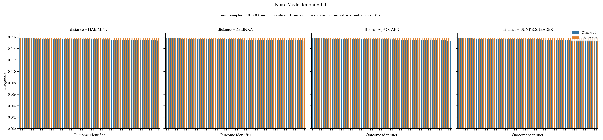

Noise Models#
Noise models are sampling procedures parameterised by a central vote and in which the probability of generating a given vote is dependent on its distance to the central vote.
- noise(num_voters: int, num_candidates: int, phi: float, rel_size_central_vote: float, distance: SetDistance = SetDistance.HAMMING, central_vote: set = None, impartial_central_vote: bool = False, seed: int = None) list[set][source]#
Generates approval votes under the noise model. This model is parameterised by a central vote. Approval ballots are then generated based on their distance to the central vote. Specifically, a vote is generated with probability
phito the power distance between the vote and the central vote.A collection of num_voters vote is generated independently and identically following the process described above.
For an analogous sampler generating ordinal ballots, see
mallows().- Parameters:
num_voters (int) – Number of Voters.
num_candidates (int) – Number of Candidates.
phi (float) – Noise model parameter, denoting the noise.
rel_size_central_vote (float) – The relative size of the central vote, if no central vote is provided, the central vote is selected uniformly at random among all subsets of candidates of size ⌊rel_size_central_vote * num_candidates⌋.
distance (SetDistance, default:
HAMMING) – Distance used to compare a given vote to the central vote.central_vote (set) – The central vote. Ignored if
impartial_central_vote = True.impartial_central_vote (bool, default:
False) – If true, the central vote is sampled fromimpartial()with the same value for the parameterpas passed to this sampler.seed (int) – Seed for numpy random number generator.
- Returns:
Approval votes.
- Return type:
list[set]
Examples
from prefsampling.approval import noise, SetDistance # Sample a profile from the noise model with 2 voters and 3 candidates and parameters # phi = 0.5, p = 0.2, default distance is SetDistance.HAMMING noise(2, 3, 0.5, 0.2) # You can give a specific distance noise(2, 3, 0.5, 0.2, distance=SetDistance.JACCARD) # For reproducibility, you can set the seed. noise(2, 3, 0.5, 0.2, seed=157) # Parameter phi needs to be in [0, 1] try: noise(2, 3, 1.2, 0.2) except ValueError: pass try: noise(2, 3, -0.2, 0.2) except ValueError: pass # Parameter p needs to be in [0, 1] try: noise(2, 3, 0.5, 1.2) except ValueError: pass try: noise(2, 3, 0.5, -0.2) except ValueError: pass
Validation

When
phiis equal to 0, then a single approval ballot should receive all the probability mass.When
phiis equal to 1, then we are supposed to obtain a uniform distribution over all approval ballots.References
Evaluating Approval-Based Multiwinner Voting in Terms of Robustness to Noise, Ioannis Caragiannis, Christos Kaklamanis, Nikos Karanikolas and George A. Krimpas, Proceedings of the International Joint Conference on Artificial Intelligence, 2020.
How to Sample Approval Elections?, Stanisław Szufa, Piotr Faliszewski, Łukasz Janeczko, Martin Lackner, Arkadii Slinko, Krzysztof Sornat and Nimrod Talmon, Proceedings of the International Joint Conference on Artificial Intelligence, 2022.
{kind=link}
{kind=link}
{kind=link}
{kind=link}
- class SetDistance(value, names=None, *, module=None, qualname=None, type=None, start=1, boundary=None)[source]#
Constants representing the different types of noise that can be applied to the noise sampler.
- BUNKE_SHEARER = 'Bunke-Shearer distance'#
Bunke-Shearer distance between s1 and s2, i.e., the Zelinka distance divided by size of the largest set between s1 and s2.
- HAMMING = 'Hamming distance'#
Hamming distance between s1 and s2, i.e., the number of elements that are either only in s1 or only in s2.
- JACCARD = 'Jaccard distance'#
Jaccard distance between s1 and s2, i.e., the Hamming distance divided by the size of the union of s1 and s2.
- ZELINKA = 'Zelinka distance'#
Zelinka distance between s1 and s2, i.e., size of the largest set between s1 and s2 minus the size of the intersection.